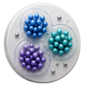

MACHINE LEARNING · PROJET 09
Projet 08 · Machine Learning
Modèle de Machine Learning · Fraude avec K-means
Clustering non supervisé K-means appliqué à la détection de fraude par carte bancaire.

CONTEXTE ET OBJECTIF
Explorer si une technique non supervisée peut séparer des comportements transactionnels compatibles avec des schémas de fraude.
DONNÉES ET DIAGNOSTIC
- Les variables transactionnelles sont utilisées pour construire des groupes de comportement.
- K-means est appliqué pour segmenter les observations sans utiliser d’étiquette préalable.
- Les profils des clusters sont analysés afin d’identifier les segments présentant des signaux atypiques.
LIVRABLE ET ENSEIGNEMENTS
Le livrable compare une implémentation dans SPSS Modeler et une version Python, montrant la valeur du clustering comme outil exploratoire pour la fraude.